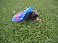
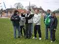
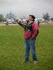
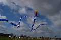
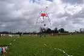
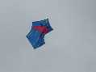
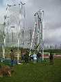
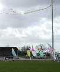
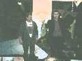
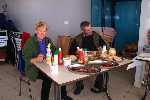

Le Mans ? Vendredi, froid et vent. Samedi, froid et vent. Dimanche, froid et vent. Alors tout au long pareil ? NON, car Vendredi et Samedi il pleuvait. Je ne dis pas il a plu, je veux dire qu'il pleuvait, sans arrêt, quoi. Il valait mieux se trouver un toit étanche !
Evidemment pour voler, il fallait avoir des cerfs-volants solides et surveiller car les mélanges étaient vite détonants... Pour les gros cerfs-volants, il valait mieux prévoir une équipe constituée.






Et j'allais oublier, samedi soir, illusioniste qui passait entre les tables, et qui ensuite a convoqué quelques spectateurs innocents (?) sur une estrade improvisée, Claude y a perdu sa culotte ! Très réussi.
Conclusion : on s'est bien amusé, merci Jean-Claude et Josette et toute l'équipe des Toiles du vent et les bénévoles qui s'ajoutaient, vous pourrez en remettre une couche l'année prochaine, s'il vous plaît ? Mais non, Josette, c'était pas raté, la météo, c'est qu'une circonstance.